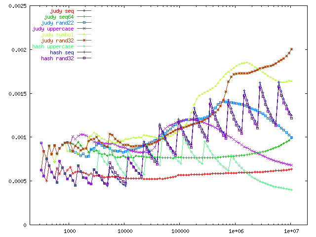
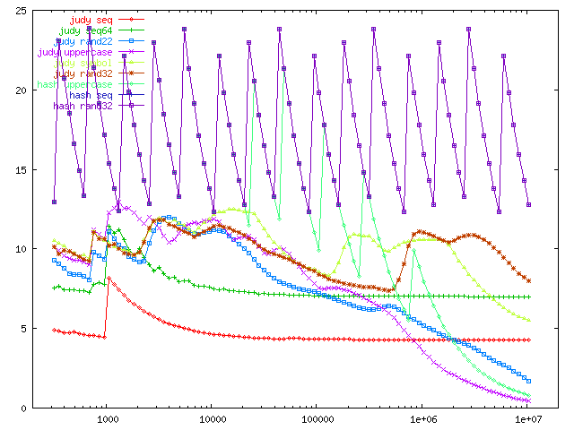

Judy Arrays
The difficult we do immediately; the impossible takes a little longer
From the manual:
Judy is a programming library that provides a relatively simple interface (API) for array-like storage of word or string indexesTraditional Array

- Array consists of contiguous segments of elements that are indexed via a start location plus a memory offset
- Very fast lookup, insertion, deletion of any given index
Disadvantages
- What if I want to store a value with index 0 and another value with index 264 - 1 ?
- How to efficiently iterate in order over sparse set?
- How to quickly get a count of elements in array?
What about a hash?
- Efficient lookup and insertion, uses relatively little memory
- In order traversal requires keeping a separate index
- Hash parameters and function need to be carefully selected for type of data
- Can reallocate the hash once it gets too full but this is costly and introduces unpredictable latency
Digital Trees
A simple flat array requires the entire expanse's size in memory usage
What if we use more than 1 array to lookup the index?
Divide our original array in half, and decode the index in steps.
Take the first half of the index and lookup a pointer to another array. Take the second half of the index and lookup the final value in the second array.
If the population is sparse we can likely just use null pointers for most of the entries in the first array, saving memory.
This basic data structure of multiple levels with multiple fanout pointers from each is known as a digital tree or "trie".
Digital Trees
Decode "485"

The order of a digital tree is the number of branches that can be taken at each level.
A low order wastes less memory because fewer entries in each branch are null pointers.
However a low order tree is deeper and requires more indirections to decode the key.
If we could somehow combine a high order with low memory waste...
Judy
Judy uses order 256 branches for performance
For a 32 bit expanse this translates to a maximum of 4 lookups
With vanilla tries this would waste a large amount of memory
Judy uses a variety of 'tricks' in order to compress the size of each branch or leaf depending on how 'full' it is
Judy arrays come in four different flavours:
- Judy1 - maps fixed size key to binary true/false
- JudyL - maps fixed size key to fixed size value
- JudyHS - maps variable sized key (string) to fixed size value
- JudySL - maps null terminated string to fixed size value
CPU cachelines
In a real machine main memory access is painfully slow, which is why memory is loaded into the CPU cache
The amount of memory read and cached at a time is typically 16 machine words long
Algorithms that want to be fast must be cache aware and be designed from the ground up to efficiently make use of the CPU cache
Cache Fills by Order

Judy1 and JudyL array internals
- Array Pointer (JAP)
- Root leaves
- Population/Memory Node (JPM)
- Pointer (JP)
- Branches
- Leaves
Judy Array Pointer
- Root pointer to the entire Judy array
- Ordinary 1 word pointer
- Because it always references a 2 word aligned object, Judy uses the least 3 significant bits to encode the object type for free
- Can optimize for the case where there is only 1 or 2 indexes in the entire array, especially useful when there are a huge number of separate arrays
Judy Array Pointer

Root Leaves
- If population is small enough Judy stores all the entries in a root level leaf
- The leaf is limited to 2 words for Judy1 and 4 words for JudyL
Judy1 Root Leaves

JudyL Root Leaves

Judy Population/Memory Node
- JPM used when Judy array's population is larger than 31 indices
- Replaces the root leaf
- JPM is 10 words in size and includes total population counter, pointers to the first and last Judy Pointers as well as other information
Judy Population/Memory Node

Judy Pointers
Can point to various classes of children nodes:
- null
- branch
- leaf
- immediate indexes
- full population (Judy1 only)
Judy Pointers
A JP is always 2 words in size and can be thought of as a two element array
For null, branches or leaves the first word is a standard pointer to the next child, and the second word encodes the pointer type, as well as the bytes decoded so far (sans the first one) and the population count of the subexpanse
JP for Null or Pointing to Branch or Leaf

Immediate Index
This is an optimization when the population of the subexpanse is small
Instead of a further indirection to a leaf node to get the value, the values are 'immediately' packed into the pointer itself.
For JudyL a separate values only leaf is used as well
Immediate Index

Where are we at?
We have the Array Pointer which points either to a Root Leaf or a JPM
Root leaves allow a small number of items to be accessed directly
Once the array grows larger the root leaf is replaced with JPM
Where are we at?
The JPM contains the array meta data and points to the first Judy Pointer
A Judy Pointer is a fat pointer that either points to a branch or leaf, or if there are few enough items, directly encodes the items into the pointer
People who deal with bits should expect to get bitten. - Jon Bentley
Branch Compression Strategies
A branch uses one of 3 possible strategies:
- Linear - for sparse populations
- Bitmap - for typical populations
- Uncompressed - for dense populations
Linear Branch
Only 16 words long
Used when population is small, generally up to 7
Along with a count, stores sorted list of populated subexpanses
Also stores list of Judy pointers to the next branch/leaf
Linear Branch

Bitmap Branch
Contains 2 tiers: the bitmap and subarrays
Bitmap is always 32 bytes long
Contains 8 bitmap subexpanses and 8 Judy pointers to the subarray
Subarray consists of packed list of Judy pointers, one for each bit set in the parent bitmap
Bitmap Branch

Two tiers are used to keep the size of the bitmap so that it will fit within 16 words for efficient inserts and deletes
The pointers to subarrays are interspersed so that on machines with 8 word cache lines the number of fills is reduced
Uncompressed Branch
The uncompressed branch is very simple, it's just a standard array with empty values represented by null pointers

Now on to the raking...
Leaf Compression Strategies
A leaf uses 1 one two possible strategies:
- Linear - again for sparse populations
- Bitmap - for medium and dense populations
Linear Leaf
A packed array of indexes stored in sorted order that contain only the minimum number of bytes remaining to be decoded at the leaf's level in the tree
In addition JudyL leaves have a separate value area that is 1 word for each index
Judy1 Linear Leaves

JudyL Linear Leaves

Bitmap Leaf
At the lowest level of the tree when there is only a single byte left to decode and sufficient population it saves memory to represent each index in the subexpanse as a bit in a 256 bit bitmap
For JudyL value subarrays are interspersed with the bitmap entries
Judy1 Bitmap Leaf

JudyL Bitmap Leaf

Half of what we taught you is wrong -- and we don’t know which half
When to use Judy
- Large, sparse data sets
- Unpredictable data, both in density and pattern
- Judy works better on semi sequential data rather than pure random
- Want relatively predictable operations with low latency
Performance
Memory
Implementation
- Invented by Doug Baskins while working at HP, he named it after his sister
- Original implementation written by a team of engineers at HP
- 20000 LOC
- Released under the LGPL license
- Alternate implementation of Judy arrays done in only 1250 LOC
Perl Example
Questions?
Links
Judy Shop ManualOfficial Judy Website
Judy Performance Comparison
Judy Mailing List
1250 LOC Judy Implementation